Bayesian Compositional Models for Sequencing Data
Department of Biostatistics and Computational Biology, University of Rochester Medical Center
Biostatistics develops statistical models and methods for learning about biological and health systems from imperfect measurements.
\[ \text{scientific question} \rightarrow \text{measurement process} \rightarrow \text{statistical model} \rightarrow \text{inference} \]
Biological data vary for several reasons:
Statistical inference = Probabilistic modeling + Observed data.
A probabilistic model describes how these sources of variation generate the observed data.
Observed data allow us to estimate the unknown parameters of a probabilistic model.
As the sample size increases, random variation averages out, uncertainty decreases, and we become more confident about systematic biological differences.
But inference is only meaningful after we define the biological quantity we want to learn.
Biostatistics may study:
Molecular systems
Microbial ecosystems
Different biological systems can produce remarkably similar statistical measurement problems.
Disease changes biological systems, not isolated variables.
Central dogma of biology (information flow):
\[ \text{DNA} \Rightarrow \underbrace{\text{RNA}} \Rightarrow \text{Protein} \Rightarrow \text{Cellular function}. \]
RNA abundance reflects:
Tissue/cells \(\Rightarrow\) RNA extraction \(\Rightarrow\) library preparation \(\Rightarrow\) sequencing \(\Rightarrow\) read counts.
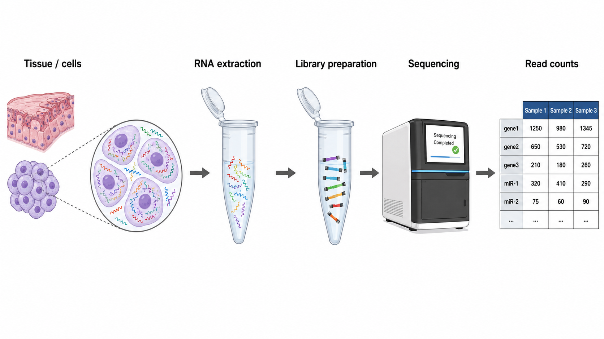
These counts are imperfect measurements shaped by both biology and the sequencing process.
| Assay | What is measured | Main question |
|---|---|---|
| Bulk mRNA-seq | Messenger RNA pooled across many cells | Which genes are expressed differently across samples or conditions? |
| Total RNA-seq | Coding and noncoding RNA pooled across many cells | How does the broader transcriptome change? |
| Single-cell RNA-seq | RNA from individual cells | Which cell types and cell states are present, and how do they differ? |
| Single-nucleus RNA-seq | Nuclear RNA from individual nuclei | How does gene expression vary across cells in tissues that are difficult to dissociate? e.g., brain. |
| Spatial transcriptomics | RNA abundance together with tissue location | Where are genes expressed within the tissue? |
| Small RNA-seq | miRNAs and other short RNAs | Which regulatory small RNAs are present and differentially abundant? |
| Long-read RNA sequencing | Full-length RNA molecules and transcript isoforms | Which transcript isoforms and splice variants are expressed? |
The human microbiome consists of communities of microorganisms—including bacteria, archaea, fungi, and viruses—that live in and on the body.
These communities interact with one another and with the host. They can:
The host and its microbiome form an interconnected biological system.
Diet, antibiotics, infection, inflammation, and disease may alter individual microorganisms as well as the structure and function of the entire community.
van Nood et al (2013).
| Assay | What is measured | Main question |
|---|---|---|
| 16S / ITS sequencing | Marker genes | Who is present? |
| Shotgun metagenomics | Microbial DNA | Which organisms and genes are present? |
| Metatranscriptomics | Microbial RNA | Which microbial genes are active? |
Different biology, similar statistical measurement structure.
\[a_{ij}=\text{underlying abundance of a feature }j\text{ in sample } i.\]
But we do not directly observe \(a_{ij}\).
Instead, library preparation and finite-depth sequencing produce read counts \(Y_{ij}\), whose distribution depends on the abundance of feature \(j\) relative to all other sequenced features.
\[ a_{ij} \quad\longrightarrow\quad \pi_{ij}=\frac{a_{ij}}{\sum_k a_{ik}} \quad\longrightarrow\quad y_{ij} \]
Absolute abundance
\(a_i=(a_{i1},\ldots,a_{iK})\)
Composition
\(\pi_i=(\pi_{i1},\ldots,\pi_{iK})\)
Observed counts
\(y_i=(y_{i1},\ldots,y_{iK})\)
Note
A feature may refer to a gene, transcript, microRNA, isomiR, microbial taxon, microbial gene, or another molecular unit of interest.
Let
\[ A_i=\sum_{k=1}^K a_{ik}. \]
Disease may change:
Important
The total abundance can be biologically meaningful, but standard sequencing data often do not identify it.
Suppose two samples contain three RNA species:
\[ \begin{aligned} \text{Sample 1: } & \boldsymbol{a}_1 = (10,80,10), \\ \text{Sample 2: } & \boldsymbol{a}_2 = (20,160,20). \end{aligned} \]
Sample 2 contains twice as many molecules of every feature, but both samples have the same composition: \((0.1,0.8,0.1)\).
If both samples are sequenced to a depth of \(N=1000\), the expected read counts are approximately \(\boldsymbol{y}_1 \approx (100,800,100)\); \(\boldsymbol{y}_2 \approx (100,800,100)\).
The sequencer can recover how reads are distributed across features, but it cannot distinguish the overall twofold difference in total molecular abundance.
Note
Sequencing depth is largely determined by library preparation, pooling, and the experimental sequencing budget—not by the total number of RNA molecules originally present in the biological sample.
For a binary condition \(g \in \{0, 1\}\), a biological target might be the absolute-abundance log-fold change:
\[ \delta_j = \log a_j^{(1)}- \log a_j^{(0)}. \]
But sequencing data more directly informs relative abundance:
\[ d_j = \log \pi_j^{(1)}- \log \pi_j^{(0)}. \]
Are these the same? Does a change in relative abundance imply that the feature itself changed?
\[ \begin{aligned} \underbrace{ \log \pi_j^{(1)}-\log \pi_j^{(0)} }_{\text{relative log-fold change}} &= \underbrace{ \left[\log a_j^{(1)}-\log a_j^{(0)}\right] }_{\text{absolute log-fold change}} - \underbrace{ \left[\log A^{(1)}-\log A^{(0)}\right] }_{\text{change in total abundance}} \\ d_j &= \delta_j-\Delta_{\text{total}}. \end{aligned} \]
Relative change combines:
Note
Without external information, absolute abundance is generally not identifiable from compositional counts alone.
A composition is a vector on the simplex:
\[ \pi_i=(\pi_{i1},\ldots,\pi_{iK}), \qquad \pi_{ij}>0, \qquad \sum_{j=1}^K \pi_{ij}=1. \]
The composition records each feature relative to the total system.
Suppose three features have absolute abundances:
\[ a^{(0)}=(10,10,10), \qquad a^{(1)}=(20,10,10). \]
Then the compositions are:
\[ \pi^{(0)}=\left(\frac13,\frac13,\frac13\right), \qquad \pi^{(1)}=\left(\frac12,\frac14,\frac14\right). \]
Features 2 and 3 did not change in absolute abundance, but their relative abundances decreased.
Compositions live on a simplex, not ordinary Euclidean space.
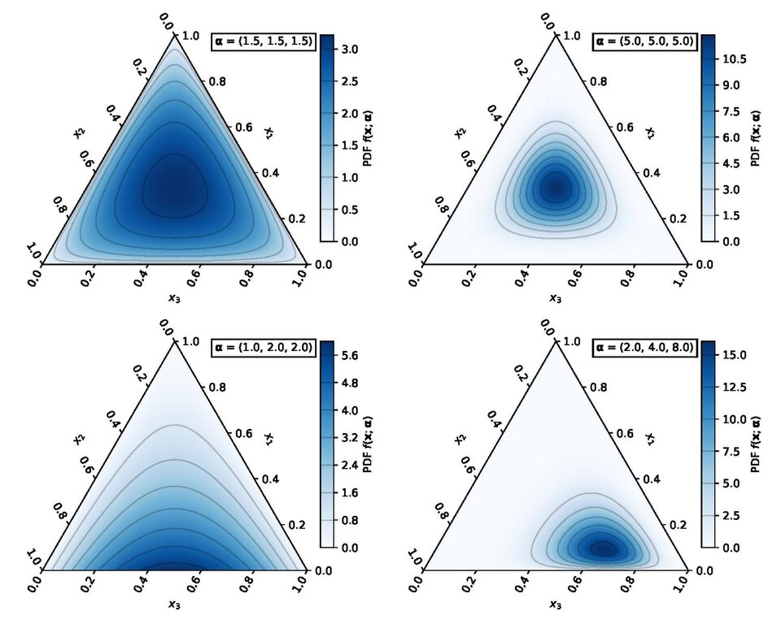
https://en.wikipedia.org/wiki/File:Dirichlet.pdf
Transformation-based approaches are useful, but they may not fully account for:
Can we model counts directly while respecting compositional geometry?
\[ y_{ij}\mid \pi_{ij},\phi_j \sim NB(n_i\pi_{ij},\phi_j), \]
\[ \pi_i=\operatorname{softmax}(\eta_i), \qquad \eta_{ij}=x_i^\top\beta_j. \]
NB likelihood
Probability distribution over counts, includes zero in the support.
Softmax mean
Fitted proportions \(\pi_{ij}\) lie on the simplex.
Regression
Covariates explain compositional change.
| Challenge | NBSR component | How it helps |
|---|---|---|
| Zeros and low counts | Negative binomial likelihood | Models counts directly without requiring log transformation or pseudocounts |
| Finite sequencing depth | Mean structure (\(n_i \pi_{ij}\)) | Explicitly accounts for sample-specific sequencing depth |
| Heteroskedasticity | Negative binomial mean–variance relationship | Variance changes naturally with the expected count: \(\text{Var}(Y_{ij}) = \mathbb{E}[Y_{ij}] + \phi_j \mathbb{E}[Y_{ij}]^2\) |
| Feature-specific overdispersion | Feature-specific (\(\phi_j\)) | Allows different features to have different levels of extra-Poisson variation |
| Compositional constraint | Softmax link | Ensures \(\pi_{ij}>0\) and \(\sum_j \pi_{ij}=1\) |
| Covariate effects | Regression on \(\eta_{ij}=x_i^\top\beta_j\) | Links predictors to changes in composition |
Many statistical models describe a distribution through three broad components:
| Component | Scientific question | NBSR component |
|---|---|---|
| Location | How does the expected composition change? | Covariate effects (\(\beta_j\)) |
| Scale | How does residual variability change? | Dispersion (\(\phi_j\)) |
| Shape / dependence | How do features vary together across samples? | Latent factors (\(z_i^\top\gamma_j\)) |
Most genomic analyses focus primarily on location: which features increase or decrease on average.
Our goal is to model not only the mean composition, but also changes in variability and shared dependence.
The standard differential-expression question is:
Which genes/miRNAs/microbial taxa differ in average relative abundance?
This emphasis is understandable:
But disease may change more than the mean.
For a binary condition \(x_i\in \{0,1\}\),
\[ \eta_{ij} = \beta_{0j} + x_i\beta_{1j}, \qquad \pi_i=\operatorname{softmax}(\eta_i). \]
The coefficient \(\beta_{1j}\) shifts the latent score of feature \(j\) between conditions.
Through the softmax, all feature-specific shifts jointly determine the change in expected composition.
Because sequencing is relative, only contrasts among feature effects are identified from the observed counts.
More on how we will adjust the estimands later.
Even within the same condition, biological samples do not have identical compositions.
For condition \(g \in \{0,1\}\), suppose
\[ \pi_i \mid x_i=g \sim F\left(\boldsymbol{\lambda}^{(g)}\right), \]
where \(\pi_i\) is the latent composition of sample \(i\).
The observed count is then generated conditionally on that composition. For example,
\[ Y_{ij} \mid \pi_{ij},n_i \sim \operatorname{Poisson}(n_i\pi_{ij}). \]
Observed count variation therefore has two sources:
Using the law of total variance,
\[ \operatorname{CV}^2(Y_{ij}) = \underbrace{\frac{1}{\mu_{ij}}}_{\text{Technical CV}^2} + \underbrace{\phi_j}_{\text{Biological CV}^2} \]
where \(\mu_{ij} = n_i \mathbb{E}[\pi_{ij}]\) and \(\phi_j\) is the squared coefficient of variation of the latent composition,
\[ \phi_j = \operatorname{CV}^2(\pi_{ij}) = \frac{\operatorname{Var}(\pi_{ij})}{\mathbb{E}[\pi_{ij}]^2}. \]
Thus, the dispersion parameter measures between-sample heterogeneity in the underlying composition, beyond finite sequencing noise.
Suppose the latent composition follows
\[ \pi_i\mid x_i=g \sim \operatorname{Dirichlet} \left( \lambda_1^{(g)},\ldots,\lambda_K^{(g)} \right). \]
Let \(\lambda_0^{(g)} = \sum_{k} \lambda_{k}^{(g)}\) and \(\bar{\lambda}_j^{(g)} = \lambda_j^{(g)} / \lambda_0^{(g)}\). Then,
\[ \phi_j^{(g)} = \operatorname{CV}^2(\pi_{ij} \mid x_i=g) = \frac{ \left(1-\bar{\lambda}_j^{(g)}\right) }{ \bar{\lambda}_j^{(g)} (\lambda_0^{(g)}+1) }. \]
In general, for two conditions \(g \neq g'\), biological variability may differ across conditions:
\[ \phi_j^{(g)} \neq \phi_j^{(g')}. \]
If dispersion differs across conditions but is modeled as constant, standard errors can be misestimated and confidence or credible intervals may be poorly calibrated.
This motivates modeling dispersion as a function of covariates:
\[ \log \phi_{ij} = w_{ij}^{\top} \alpha_j. \]
The scale covariates \(w_{ij}\) may include,
Thus, variability may depend on both sample characteristics and the abundance level of the feature.
Note
The covariates governing variability need not be the same as those governing the mean composition.
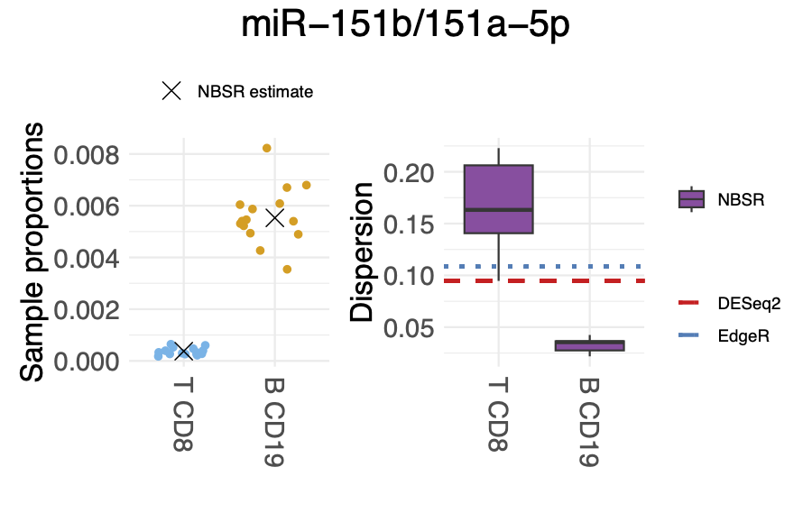
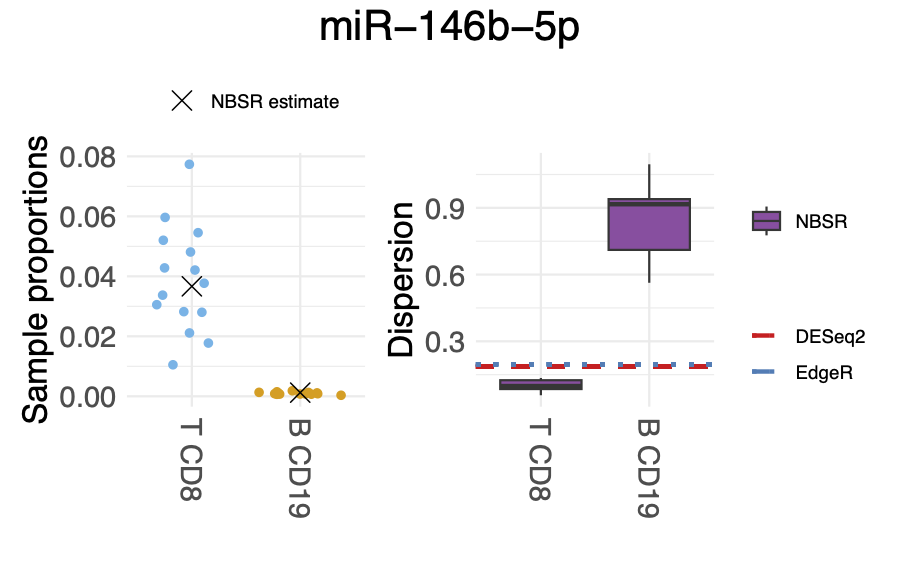
Location
How does the expected composition change?
\[ \beta_j \] Covariates shift the mean relative abundance of each feature.
Scale
How does biological heterogeneity change?
\[ \phi_j \]
Dispersion captures between-sample variability in the latent composition and may depend on covariates.
Shape / dependence
How do features co-vary beyond compositional constraints?
\[ z_i^\top\gamma_j \]
Latent factors capture shared residual structure across features.
Genomic studies have traditionally focused on location. Our framework extends this perspective by modeling scale, while ongoing work introduces latent factors to capture dependence and distributional shape.
\[ \eta_{ij} = x_i^\top\beta_j + z_i^\top\gamma_j. \]
Latent factors can capture shared residual variation due to:
Let \(\theta = (\beta, \alpha)\) denote all model parameters. The posterior distribution is,
\[ p(\theta \mid Y, X, W) = \frac{ p_{\ell}(Y | \theta, X, W) \cdot p_0(\theta). }{ m_0(Y | X, W) }. \]
The denominator \(m_0\) denotes the marginal likelihood, which is intractable:
\[ m_0(Y | X, W) = \int p_{\ell}(Y | \theta, X, W) \cdot p_0(d\theta). \]
Two broad approaches are available:
The Laplace approximation replaces the posterior with a multivariate normal distribution centered at the posterior mode.
The approximation is most accurate when the posterior is unimodal and approximately symmetric near its mode.
The Laplace approximation requires two main steps:
We use the automatic-differentiation framework PyTorch, which provides:
Recall, for feature \(j\), our target is the absolute log-fold change:
\[ \delta_j = \log a_j^{(1)} - \log a_j^{(0)}. \]
But we can only estimate \[ \begin{aligned} d_j &= \log \pi_j^{(1)} - \log \pi_j^{(0)} \\ &= \delta_j - \Delta_{\text{total}}. \end{aligned} \]
For \(g \in \{0, 1\}\), let \(x(g)\) denote the covariate vector corresponding to condition \(g\). At the posterior mode,
\[ \hat{\pi}_{j}^{(g)} = \frac{ \exp(\hat{\beta}_j^\top x(g)) }{ \sum_{k} \exp(\hat{\beta}_k^{\top} x(g)) }. \]
So,
\[ \hat{d}_j = \log \hat{\pi}_j^{(1)} - \log \hat{\pi}_j^{(0)}. \]
We need to correct for the bias term: \(\Delta_{\text{total}}\).
Suppose the absolute abundances under two conditions are
\[ (10, 10, 10, 10, 10) \quad \text{ and } \quad (20, 10, 10, 10, 10). \] Only the first feature changes. Therefore, the true absolute log-fold changes are
\[ \delta = (\log 2, 0, 0, 0, 0). \]
However, the corresponding compositions are
\[ \left(\frac{1}{5}, \frac{1}{5}, \frac{1}{5}, \frac{1}{5}, \frac{1}{5}\right) \quad \text{ and } \quad \left(\frac{2}{6}, \frac{1}{6}, \frac{1}{6}, \frac{1}{6}, \frac{1}{6}\right). \]
and the compositional log-fold change is
\[ d = \left(\log \frac{10}{6}, \log \frac{5}{6}, \log \frac{5}{6}, \log \frac{5}{6}, \log \frac{5}{6}\right). \]
All unchanged features are shifted by the same amount.
If most features are unchanged, then most \(\delta_j\) values are zero:
\[ d_j = \delta_j - \Delta_{\text{total}} = - \Delta_{\text{total}} . \]
Therefore, the dominant mode of the \(d_j\) values estimates,
\[ \hat{b} = -\hat{\Delta}_{\text{total}} = \text{mode} \{\hat{d}_1, ..., \hat{d}_K\}. \]
The bias corrected estimator is \(\hat{\delta}_j = \hat{d}_j - \hat{b}\).
Note
The key assumption is that most features are unchanged, so the mode of the compositional effects represents the common compositional shift.
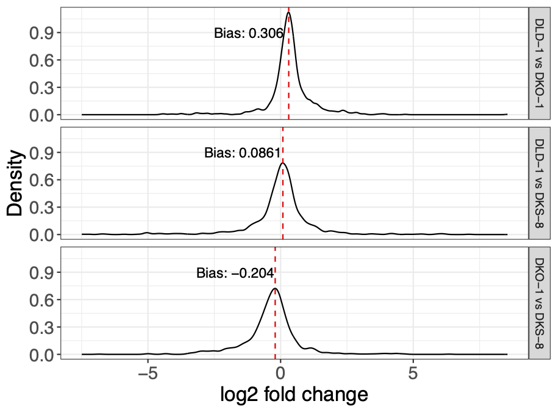
First, consider inference for the uncorrected compositional effect: \(d_j = \log \pi_j^{(1)} - \log \pi_j^{(0)}\).
Under the Laplace approximation,
\[ \beta | Y, X, W \approx \operatorname{Normal}(\hat{\beta}, \Sigma_{\beta}), \] where \(\Sigma_{\beta}\) is the block matrix of \((-H)^{-1}\) corresponding to \(\beta\).
Using the delta method, we take \(g_j(\beta) = d_j\):
\[ d_j \approx \operatorname{Normal}(\hat{d}_j, V_j), \] where \(V_j = \nabla g_j(\hat{\beta})^{\top} \Sigma_{\beta} \nabla g_j(\hat{\beta})\).
Recall that
\[ \hat{\delta}_j = \hat{d}_j - \hat{b}. \]
Therefore,
\[ \operatorname{Var}(\hat{\delta}_j) = \operatorname{Var}(\hat{d}_j) + \operatorname{Var}(\hat{b}) - 2 \operatorname{Cov}(\hat{d}_j, \hat{b}). \]
The latter two terms are difficult to derive analytically because \(\hat{b}\) is the estimated mode of \(\hat{d}_j\)’s – a nonlinear function of all feature-level effects.
We use a computationally convenient approximation,
\[ \operatorname{Var}(\hat{\delta}_j) \approx \operatorname{Var}(\hat{d}_j). \]
Zhou et al. (2022) argue that, under suitable assumptions, these missing variance/covariance terms are small relative to the feature-specific variance.
We treat this as a working approximation and assess its adequacy empirically.
We evaluate whether the proposed method provides:
We compare NBSR with DESeq2, edgeR, and LinDA.
We simulate counts in two conditions, \(g \in \{0,1\}\).
For sample \(i\) in condition \(g\):
\[ \pi_i \sim \text{Dirichlet}(\lambda^{(g)}). \] 2. Sample the total number of reads, \(s_i = \lceil u_i \rho_i \rceil\) where \(u_i \sim \operatorname{Uniform}(10^6, 10^8)\) models the library size and \(\rho_i ~ \text{Uniform}(0, 0.5)\) models the capture rate for miRNA molecules.
The baseline Dirichlet parameters \(\lambda\) are estimated from real microRNAome datasets [McCall et al (2017)].
We retain human miRNAs listed in MirGeneDB [Fromm et al (2022)]; samples with fewer than \(100{,}000\) miRNA reads are excluded; the final analysis includes \(K=596\) miRNAs.
Dirichlet parameters are estimated separately for each cell type.
This produces realistic differences in:
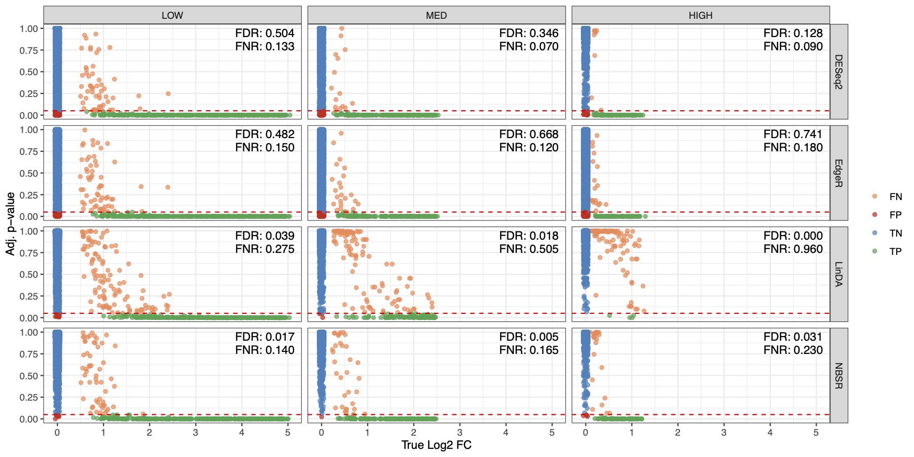
NBSR controls false discoveries across abundance levels.
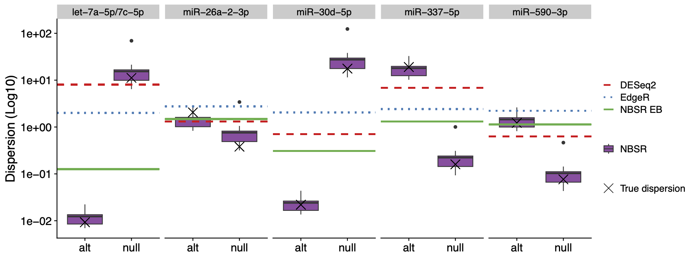
NBSR provides accurate estimates for the dispersion parameter.
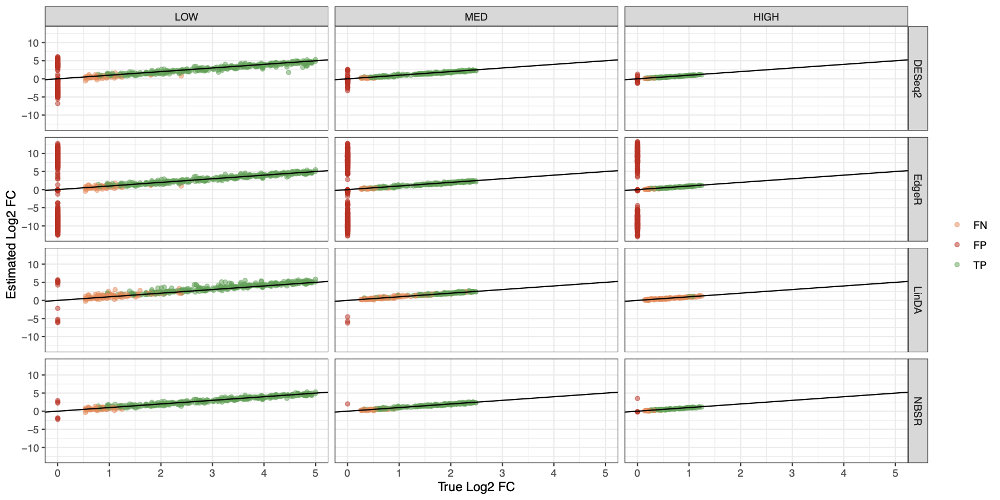
Bias correction recovers feature-specific effects.
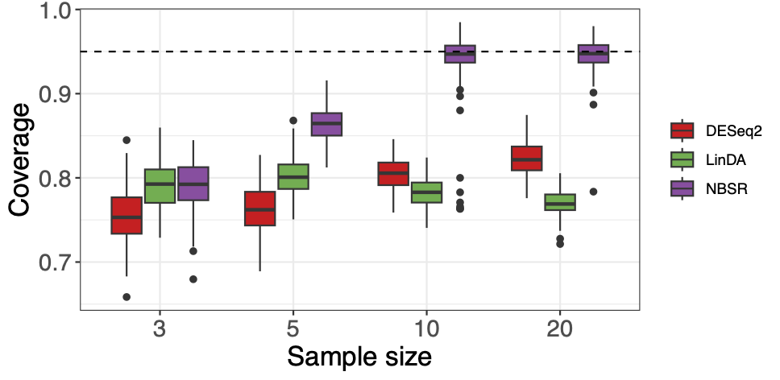
Modeling condition-dependent dispersion maintains coverage near the nominal level when biological variability differs across groups.
The Laplace approximation provides fast inference and good false-discovery-rate control.
However, it can be conservative:
How much efficiency do we lose by replacing full posterior sampling with a local Gaussian approximation?
The fast Laplace approach uses a delta-method approximation for the relative effect,
\[ d_j = \log\pi_j^{(1)} - \log\pi_j^{(0)}. \]
After estimating the common compositional shift (b),
\[ \hat\delta_j=\hat d_j-\hat b. \]
The exact variance contains additional terms:
\[ \operatorname{Var}(\hat\delta_j) = \operatorname{Var}(\hat d_j) + \operatorname{Var}(\hat b) - 2\operatorname{Cov}(\hat d_j,\hat b). \]
For computational convenience, our current Laplace procedure uses
\[ \operatorname{Var}(\hat\delta_j) \approx \operatorname{Var}(\hat d_j), \]
and therefore does not fully propagate uncertainty from estimating the common shift.
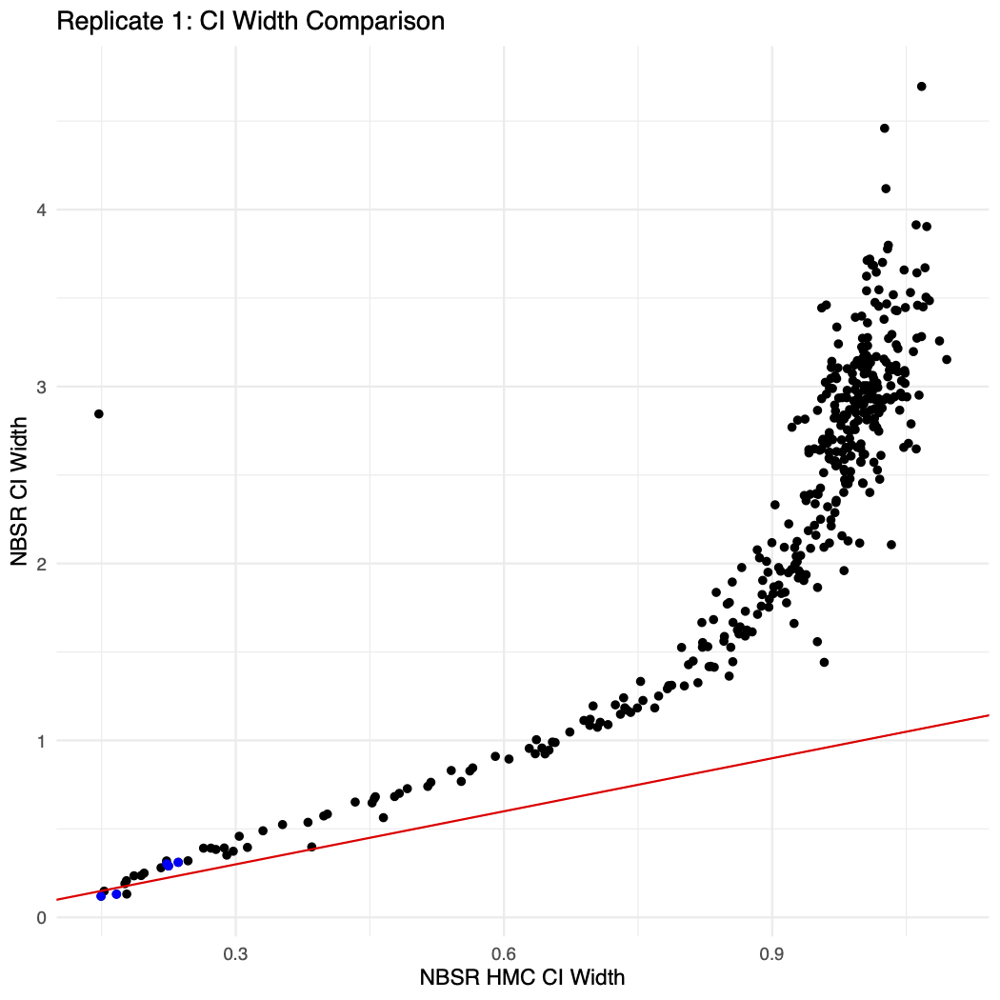
Each point represents one feature. Credible interval width from HMC (x-axis) and for Laplace approximation (y-axis).
Most points lie above the diagonal, indicating that the Laplace approximation produces wider credible intervals than HMC.
For each posterior draw \(s\), HMC recomputes the common shift \(b\) and the corrected effect
\[ \delta_j^{(s)}=d_j^{(s)}-b^{(s)}. \]
It therefore propagates the uncertainty in \(b\) and its dependence with \(d_j\), rather than dropping these terms.
This area has many open methodological questions:
This project sits at the intersection of:
Students can contribute to new theory, computation, software, and biomedical applications.
Department of Biostatistics and Computational Biology
The program is housed within the School of Medicine and Dentistry, connecting methodological research directly to substantive scientific problems.
Graduates pursue careers in:
All admitted Statistics PhD students receive:
Years 1–2: Funding is provided by the School of Medicine and Dentistry.
Year 3 onward: The department supports students through collaborative biomedical research, training grants, and methodological research grants.
Students are matched with projects based on mutual research interests and are not required to secure their own academic-year funding.
The program generally takes 4–6 years, with most students completing the degree in five years. Up to 30 graduate credits may be transferred, subject to approval.
The GRE is not considered, even if submitted.
Most international applicants must submit TOEFL, IELTS, or Duolingo scores. Waivers are available in specified circumstances.
Questions?
Seong-Hwan Jun
Email: seonghwan_jun@urmc.rochester.edu
van Nood, E. et al. Duodenal infusion of donor feces for recurrent Clostridium difficile. N. Engl. J. Med. 368, 407–415 (2013).
Zhou, H., He, K., Chen, J. & Zhang, X. LinDA: linear models for differential abundance analysis of microbiome compositional data. Genome Biol. 23, 95 (2022).
McCall, M. N. et al. Toward the human cellular microRNAome. Genome Res. 27, 1769–1781 (2017).
Fromm, B. et al. MirGeneDB 2.1: toward a complete sampling of all major animal phyla. Nucleic Acids Res. 50, D204–D210 (2022).
\[ y_{ij}\mid \pi_{ij},\phi_j\sim \operatorname{NB}(n_i\pi_{ij},\phi_j), \]
\[ E(y_{ij})=\mu_{ij}, \qquad \operatorname{Var}(y_{ij})=\mu_{ij}+\phi_j\mu_{ij}^2. \]
A basic log-ratio is
\[ \log \frac{\pi_j}{\pi_k}. \]
Interpretation:
How abundant is feature \(j\) relative to feature \(k\)?
Log-ratios turn multiplicative comparisons into additive quantities suitable for regression.
ALR
\[ \log\frac{\pi_j}{\pi_K} \]
Uses a reference feature.
CLR
\[ \log\frac{\pi_j}{g(\pi)} \]
Uses the geometric mean.
ILR
Orthonormal log-contrast coordinates.
| Transformation | Definition | Advantages | Limitations |
|---|---|---|---|
| ALR | \(\displaystyle \log\frac{\pi_j}{\pi_K}\) | Easy to compute and fit using standard regression methods; directly interpretable relative to a chosen reference \(K\) | Results depend on the reference; an unstable or changing reference affects every coordinate |
| CLR | \(\displaystyle \log\frac{\pi_j}{g(\pi)}\) | Symmetric across features; does not require a single reference feature | Coordinates sum to zero; covariance matrix is singular; interpretation is relative to the geometric mean |
| ILR | \(\displaystyle z = V^\top \log \pi\) | Orthonormal and nonredundant; well suited for standard multivariate methods | Coordinates depend on the chosen basis; often less directly interpretable biologically |
For \(\pi\in S^K\), define
\[ CLR(\pi)_j = \log\frac{\pi_j}{g(\pi)}, \qquad g(\pi)=\left(\prod_{k=1}^K \pi_k\right)^{1/K}. \]
\[ \operatorname{softmax}(\eta)_j = \frac{\exp(\eta_j)}{\sum_k\exp(\eta_k)}. \]
Let \(\tilde\eta=\eta-\bar\eta\mathbf{1}\). Then
\[ \operatorname{softmax}(\eta)=CLR^{-1}(\tilde\eta). \]
Under an ALR reference constraint, \(\beta_K=0\). The reference-free CLR coefficient is
\[ \beta_j^{CLR} = \beta_j^{ALR} - \frac{1}{K}\sum_{k=1}^K\beta_k^{ALR}. \]
For a binary condition without interactions,
\[ \Delta_j^{CLR} = \beta_j - \frac{1}{K}\sum_{k=1}^K\beta_k. \]
This is invariant to the ALR reference.
For each posterior draw \(s\):
\[ \Delta_j^{adj,(s)} = \Delta_j^{CLR,(s)}-m_b^{(s)}; \]
Note
The uncertainty in the bias correction is propagated automatically.
Two cases:
Total abundance conserved. Swap parameters between low- and high-abundance features; increases are balanced by corresponding decreases; considers sample sizes \(N \in \{3, 5, 10, 20\}\) per group.
Total abundance imbalanced.
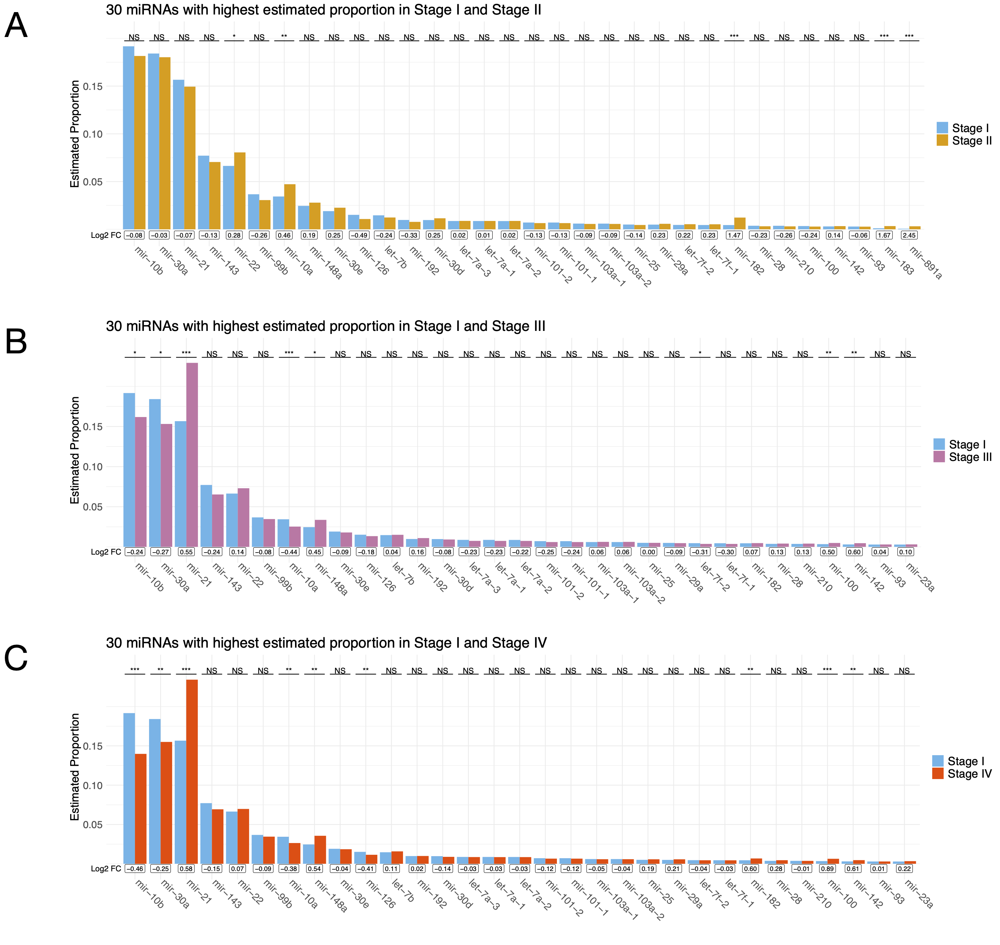
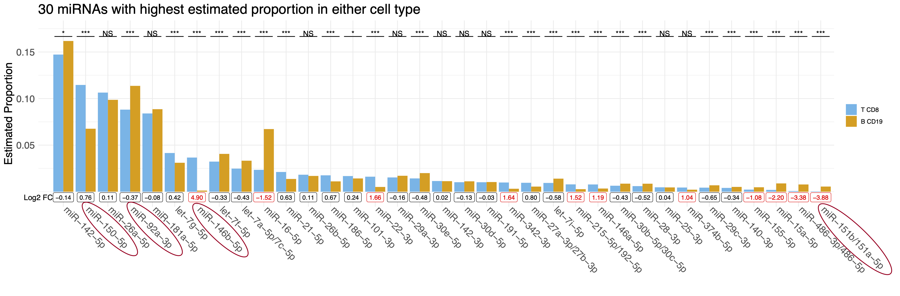